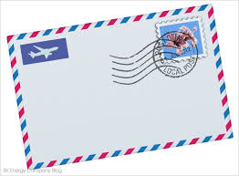

돌아가기
여기까지가 끝인가보오 이제 나는 돌아서겠소
억지 노력으로 인연을 거슬러 괴롭히지는 않겠소
하고 싶은 말 하려 했던 말 이대로 다 남겨 두고서
혹시나 기대도 포기하려하오 그대 부디 잘 지내시오
기나긴 그대 침묵을 이별로 받아 두겠소
행여 이 맘 다칠까 근심은 접어두오
오 사랑한 사람이여 더 이상 못 보아도
사실 그대 있음으로 힘겨운 날들을 견뎌왔음에 감사하오
좋은 사람 만나오 사는 동안 날 잊고 사시오
진정 행복하길 바라겠소
이 맘만 가져가오
기나긴 그대 침묵을 이별로 받아 두겠소
행여 이 맘 다칠까 근심은 접어두오
오 사랑한 사람이여 더 이상 못 보아도
사실 그대 있음으로 힘겨운 날들을 견뎌왔음에 감사하오
좋은 사람 만나오 사는 동안 날 잊고 사시오
진정 행복하길 바라겠소
이 맘만 가져가오
